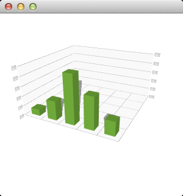

Q3DBars Class
The Q3DBars class provides methods for rendering 3D bar graphs. More...
| Header: | #include <Q3DBars> |
| CMake: | find_package(Qt6 REQUIRED COMPONENTS Graphs) target_link_libraries(mytarget PRIVATE Qt6::Graphs) |
| qmake: | QT += graphs |
| Inherits: | QAbstract3DGraph |
| Status: | Technical Preview |
Properties
|
|
Public Functions
| Q3DBars() | |
| virtual | ~Q3DBars() |
| void | addAxis(QAbstract3DAxis *axis) |
| void | addSeries(QBar3DSeries *series) |
| QList<QAbstract3DAxis *> | axes() const |
| QSizeF | barSeriesMargin() const |
| QSizeF | barSpacing() const |
| float | barThickness() const |
| QCategory3DAxis * | columnAxis() const |
| float | floorLevel() const |
| void | insertSeries(int index, QBar3DSeries *series) |
| bool | isBarSpacingRelative() const |
| bool | isMultiSeriesUniform() const |
| QBar3DSeries * | primarySeries() const |
| void | releaseAxis(QAbstract3DAxis *axis) |
| void | removeSeries(QBar3DSeries *series) |
| QCategory3DAxis * | rowAxis() const |
| QBar3DSeries * | selectedSeries() const |
| QList<QBar3DSeries *> | seriesList() const |
| void | setBarSeriesMargin(const QSizeF &margin) |
| void | setBarSpacing(const QSizeF &spacing) |
| void | setBarSpacingRelative(bool relative) |
| void | setBarThickness(float thicknessRatio) |
| void | setColumnAxis(QCategory3DAxis *axis) |
| void | setFloorLevel(float level) |
| void | setMultiSeriesUniform(bool uniform) |
| void | setPrimarySeries(QBar3DSeries *series) |
| void | setRowAxis(QCategory3DAxis *axis) |
| void | setValueAxis(QValue3DAxis *axis) |
| QValue3DAxis * | valueAxis() const |
Signals
| void | barSeriesMarginChanged(const QSizeF &margin) |
| void | barSpacingChanged(const QSizeF &spacing) |
| void | barSpacingRelativeChanged(bool relative) |
| void | barThicknessChanged(float thicknessRatio) |
| void | columnAxisChanged(QCategory3DAxis *axis) |
| void | floorLevelChanged(float level) |
| void | multiSeriesUniformChanged(bool uniform) |
| void | primarySeriesChanged(QBar3DSeries *series) |
| void | rowAxisChanged(QCategory3DAxis *axis) |
| void | selectedSeriesChanged(QBar3DSeries *series) |
| void | valueAxisChanged(QValue3DAxis *axis) |
Detailed Description
This class enables developers to render bar graphs in 3D and to view them by rotating the scene freely. Rotation is done by holding down the right mouse button and moving the mouse. Zooming is done by mouse wheel. Selection, if enabled, is done by left mouse button. The scene can be reset to default camera view by clicking mouse wheel. In touch devices rotation is done by tap-and-move, selection by tap-and-hold and zoom by pinch.
If no axes are set explicitly to Q3DBars, temporary default axes with no labels are created. These default axes can be modified via axis accessors, but as soon any axis is set explicitly for the orientation, the default axis for that orientation is destroyed.
Q3DBars supports more than one series visible at the same time. It is not necessary for all series to have the same amount of rows and columns. Row and column labels are taken from the first added series, unless explicitly defined to row and column axes.
How to construct a minimal Q3DBars graph
First, construct an instance of Q3DBars. Since we are running the graph as top level window in this example, we need to clear the Qt::FramelessWindowHint flag, which gets set by default:
Q3DBars bars; bars.setMinimumSize(QSize(256, 256)); bars.setResizeMode(QQuickWidget::SizeRootObjectToView);
After constructing Q3DBars, you can set the data window by changing the range on the row and column axes. It is not mandatory, as data window will default to showing all of the data in the series. If the amount of data is large, it is usually preferable to show just a portion of it. For the example, let's set the data window to show first five rows and columns:
bars.rowAxis()->setRange(0, 4); bars.columnAxis()->setRange(0, 4);
Now Q3DBars is ready to receive data to be rendered. Create a series with one row of 5 values:
QBar3DSeries *series = new QBar3DSeries; QBarDataRow *data = new QBarDataRow; *data << 1.0f << 3.0f << 7.5f << 5.0f << 2.2f; series->dataProxy()->addRow(data); bars.addSeries(series);
Note: We set the data window to 5 x 5, but we are adding only one row of data. This is ok, the rest of the rows will just be blank.
Finally you will need to set it visible:
bars.show();
The complete code needed to create and display this graph is:
#include <QtGraphs> int main(int argc, char **argv) { QApplication app(argc, argv); Q3DBars bars; bars.setMinimumSize(QSize(256, 256)); bars.setResizeMode(QQuickWidget::SizeRootObjectToView); bars.rowAxis()->setRange(0, 4); bars.columnAxis()->setRange(0, 4); QBar3DSeries *series = new QBar3DSeries; QBarDataRow *data = new QBarDataRow; *data << 1.0f << 3.0f << 7.5f << 5.0f << 2.2f; series->dataProxy()->addRow(data); bars.addSeries(series); bars.show(); return app.exec(); }
And this is what those few lines of code produce:

The scene can be rotated, zoomed into, and a bar can be selected to view its value, but no other interaction is included in this minimal code example. You can learn more by familiarizing yourself with the examples provided, like the Simple Bar Graph.
See also Q3DScatter, Q3DSurface, and Qt Graphs C++ Classes.
Property Documentation
barSeriesMargin : QSizeF
Margin between series columns in X and Z dimensions. Sensible values are on the range [0,1).
Preset to (0.0, 0.0) by default. This property enables showing bars from different series side by side, but with space between columns.
Access functions:
| QSizeF | barSeriesMargin() const |
| void | setBarSeriesMargin(const QSizeF &margin) |
Notifier signal:
| void | barSeriesMarginChanged(const QSizeF &margin) |
See also barSpacing.
barSpacing : QSizeF
Bar spacing in the X and Z dimensions.
Preset to (1.0, 1.0) by default. Spacing is affected by the barSpacingRelative property.
Access functions:
| QSizeF | barSpacing() const |
| void | setBarSpacing(const QSizeF &spacing) |
Notifier signal:
| void | barSpacingChanged(const QSizeF &spacing) |
See also barSpacingRelative, multiSeriesUniform, and barSeriesMargin.
barSpacingRelative : bool
This property holds whether spacing is absolute or relative to bar thickness.
If it is true, the value of 0.0 means that the bars are placed side-to-side, 1.0 means that a space as wide as the thickness of one bar is left between the bars, and so on. Preset to true.
Access functions:
| bool | isBarSpacingRelative() const |
| void | setBarSpacingRelative(bool relative) |
Notifier signal:
| void | barSpacingRelativeChanged(bool relative) |
barThickness : float
This property holds the bar thickness ratio between the X and Z dimensions.
The value 1.0 means that the bars are as wide as they are deep, whereas 0.5 makes them twice as deep as they are wide. Preset to 1.0 by default.
Access functions:
| float | barThickness() const |
| void | setBarThickness(float thicknessRatio) |
Notifier signal:
| void | barThicknessChanged(float thicknessRatio) |
columnAxis : QCategory3DAxis*
This property holds the axis attached to the active column.
Sets the axis of the active column to axis. Implicitly calls addAxis() to transfer the ownership of the axis to this graph.
If axis is null, a temporary default axis with no labels is created. This temporary axis is destroyed if another axis is set explicitly to the same orientation.
Access functions:
| QCategory3DAxis * | columnAxis() const |
| void | setColumnAxis(QCategory3DAxis *axis) |
Notifier signal:
| void | columnAxisChanged(QCategory3DAxis *axis) |
See also addAxis() and releaseAxis().
floorLevel : float
This property holds the floor level for the bar graph in Y-axis data coordinates.
The actual floor level will be restricted by the Y-axis minimum and maximum values. Defaults to zero.
Access functions:
| float | floorLevel() const |
| void | setFloorLevel(float level) |
Notifier signal:
| void | floorLevelChanged(float level) |
multiSeriesUniform : bool
This property holds whether bars are to be scaled with proportions set to a single series bar even if there are multiple series displayed.
If set to true, bar spacing will be correctly applied only to the X-axis. Preset to false by default.
Access functions:
| bool | isMultiSeriesUniform() const |
| void | setMultiSeriesUniform(bool uniform) |
Notifier signal:
| void | multiSeriesUniformChanged(bool uniform) |
primarySeries : QBar3DSeries*
This property holds the primary series of the graph.
Sets series as the primary series of the graph. The primary series determines the row and column axis labels when the labels are not explicitly set to the axes.
If the specified series is not yet added to the graph, setting it as the primary series will also implicitly add it to the graph.
If the primary series itself is removed from the graph, this property resets to default.
If series is null, this property resets to default. Defaults to the first added series or zero if no series are added to the graph.
Access functions:
| QBar3DSeries * | primarySeries() const |
| void | setPrimarySeries(QBar3DSeries *series) |
Notifier signal:
| void | primarySeriesChanged(QBar3DSeries *series) |
rowAxis : QCategory3DAxis*
This property holds the axis attached to the active row.
Sets the axis of the active row to axis. Implicitly calls addAxis() to transfer the ownership of the axis to this graph.
If axis is null, a temporary default axis with no labels is created. This temporary axis is destroyed if another axis is set explicitly to the same orientation.
Access functions:
| QCategory3DAxis * | rowAxis() const |
| void | setRowAxis(QCategory3DAxis *axis) |
Notifier signal:
| void | rowAxisChanged(QCategory3DAxis *axis) |
See also addAxis() and releaseAxis().
[read-only] selectedSeries : QBar3DSeries* const
This property holds the selected series or a null value.
If selectionMode has the SelectionMultiSeries flag set, this property holds the series that owns the selected bar.
Access functions:
| QBar3DSeries * | selectedSeries() const |
Notifier signal:
| void | selectedSeriesChanged(QBar3DSeries *series) |
valueAxis : QValue3DAxis*
Sets the active value axis (the Y-axis) to axis. Implicitly calls addAxis() to transfer the ownership of axis to this graph.
If axis is null, a temporary default axis with no labels and an automatically adjusting range is created. This temporary axis is destroyed if another axis is set explicitly to the same orientation.
Access functions:
| QValue3DAxis * | valueAxis() const |
| void | setValueAxis(QValue3DAxis *axis) |
Notifier signal:
| void | valueAxisChanged(QValue3DAxis *axis) |
See also addAxis() and releaseAxis().
Member Function Documentation
Q3DBars::Q3DBars()
Constructs a new 3D bar graph.
[virtual noexcept] Q3DBars::~Q3DBars()
Destroys the 3D bar graph.
void Q3DBars::addAxis(QAbstract3DAxis *axis)
Adds axis to the graph. The axes added via addAxis are not yet taken to use, addAxis is simply used to give the ownership of the axis to the graph. The axis must not be null or added to another graph.
See also releaseAxis(), setValueAxis(), setRowAxis(), and setColumnAxis().
void Q3DBars::addSeries(QBar3DSeries *series)
Adds the series to the graph. A graph can contain multiple series, but only one set of axes, so the rows and columns of all series must match for the visualized data to be meaningful. If the graph has multiple visible series, only the primary series will generate the row or column labels on the axes in cases where the labels are not explicitly set to the axes. If the newly added series has specified a selected bar, it will be highlighted and any existing selection will be cleared. Only one added series can have an active selection.
See also seriesList(), primarySeries, and QAbstract3DGraph::hasSeries().
QList<QAbstract3DAxis *> Q3DBars::axes() const
Returns the list of all added axes.
See also addAxis().
void Q3DBars::insertSeries(int index, QBar3DSeries *series)
Inserts the series into the position index in the series list. If the series has already been added to the list, it is moved to the new index.
Note: When moving a series to a new index that is after its old index, the new position in list is calculated as if the series was still in its old index, so the final index is actually the index decremented by one.
See also addSeries(), seriesList(), and QAbstract3DGraph::hasSeries().
void Q3DBars::releaseAxis(QAbstract3DAxis *axis)
Releases the ownership of the axis back to the caller, if it is added to this graph. If the released axis is in use, a new default axis will be created and set active.
If the default axis is released and added back later, it behaves as any other axis would.
See also addAxis(), setValueAxis(), setRowAxis(), and setColumnAxis().
void Q3DBars::removeSeries(QBar3DSeries *series)
Removes the series from the graph.
See also QAbstract3DGraph::hasSeries().
QList<QBar3DSeries *> Q3DBars::seriesList() const
Returns the list of series added to this graph.
See also QAbstract3DGraph::hasSeries().